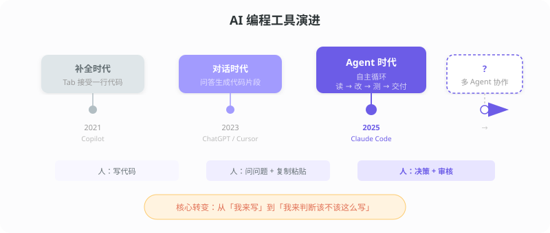
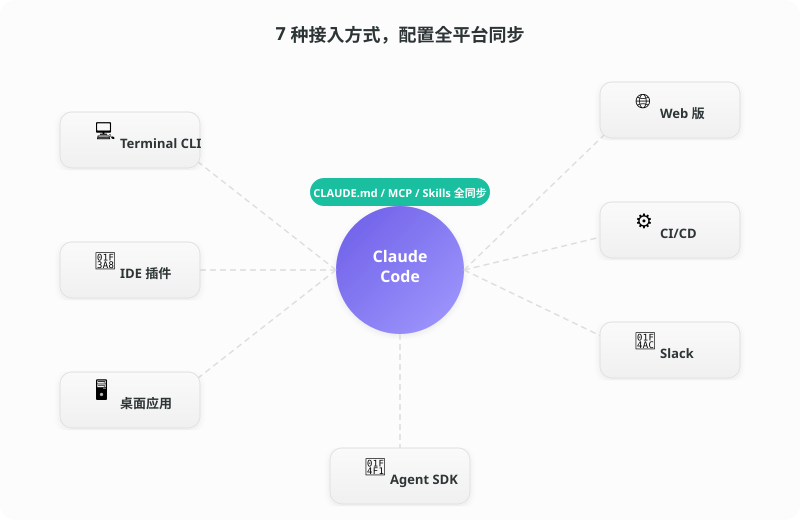
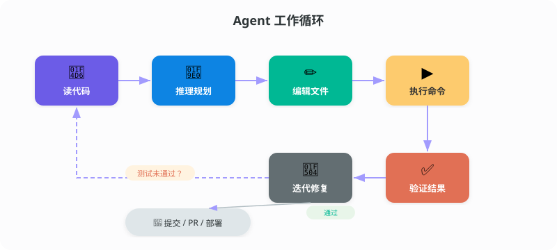
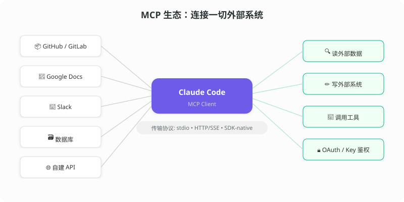
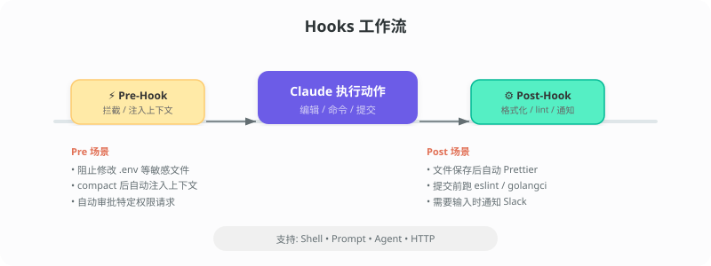
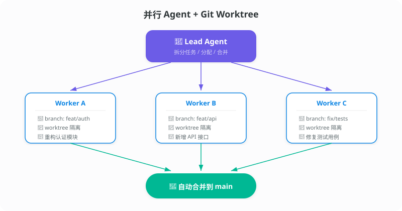
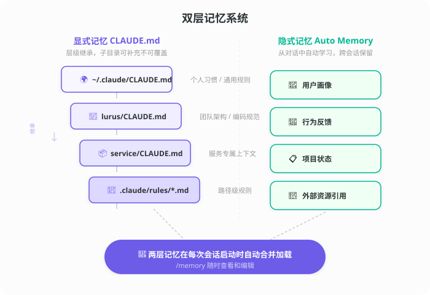
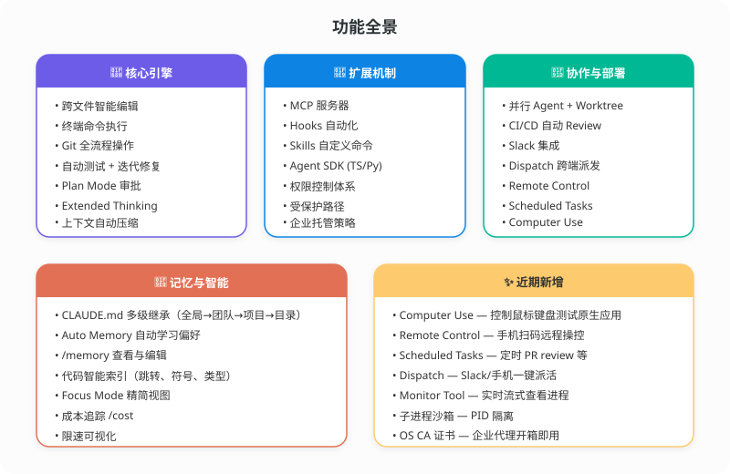
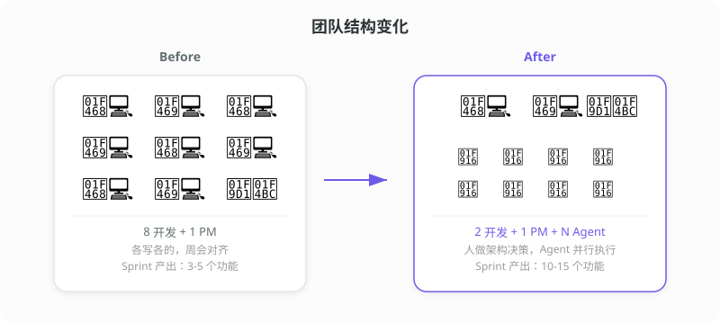

Claude Code 功能全景
一个跑在终端里的 AI 工程师。读代码、改代码、跑测试、提 PR，一条龙。
先说一个场景
周五下午四点。产品经理在群里发了一张图："这个页面的筛选逻辑改一下，加三个维度，下周一用。"
你点开代码，涉及 6 个文件。前端过滤逻辑、后端接口、数据库查询、单元测试、API 文档、还有一个该死的 migration。
以前你会叹口气，开始一个个文件改。
现在你打开终端，把需求丢给它。它读完相关代码，问了你两个边界问题，然后开始自己改。跑测试，有两个没过，自己修。十五分钟后给你一个 PR。
你 review 了一下，合并。下班。
或者你还在那个叹气的阶段？评论区聊聊。
从补全到 Agent：走到哪了

2021，Copilot 教大家按 Tab。
2023，ChatGPT 和 Cursor 教大家把代码贴进去问。
2025，Agent 开始自己跑循环了。
三个阶段，人的角色在变：写代码 → 复制粘贴 → 做决策和审核。
去哪儿用

七个入口，同一套配置。
| 入口 | 一句话 |
|---|---|
| Terminal CLI | 功能最全，脚本自动化首选 |
| VS Code / JetBrains | 内联 diff，选中代码直接对话 |
| 桌面应用 | 多会话并排，可视化操作 |
| Web 版 | 浏览器打开就用，手机也行 |
| CI/CD | GitHub Actions 里自动 review |
| Slack | 群里 @Claude，派任务收 PR |
| Agent SDK | TS / Python，嵌入你自己的产品 |
CLAUDE.md、MCP、Skills 全平台同步。终端设好的，桌面和 Web 立刻生效。
怎么干活

六步循环。测试不过就自己修，直到绿灯。
跨文件编辑、终端命令、Git 全流程——都在循环里。
复杂改动开 Plan Mode，先出方案你审批，再动手。
MCP：看到代码之外的世界

Model Context Protocol——标准化的外部系统连接协议。
官方开箱即用：
自建也行。写个 MCP Server，把内部 API、数据库、文档系统全接进来。
Hooks：给动作装触发器

在执行动作的前后插入自定义逻辑。
- 编辑文件 → 自动 Prettier
- 提交代码 → 自动 lint
- 碰 .env → 直接拦截
Skills：团队命令库
把重复操作封装成斜杠命令，团队共享。
/deploy-stg → 部署测试环境
/security → 安全扫描
创建：claude /skills add <name>
新人来了，跑一遍 Skills 列表就知道团队怎么干活。
并行 Agent：一个人当一个团队

基于 Git Worktree 的分支隔离。Lead Agent 拆任务，Worker 各干各的，干完自动合并。
记忆系统：越用越懂你

CLAUDE.md（显式）——全局 → 团队 → 项目 → 目录，四级继承。
Auto Memory（隐式）——从对话中自动提取。跨会话保留，/memory 随时查看。
功能全景

近期新功能
| 功能 | 说明 |
|---|---|
| Computer Use | 控制鼠标键盘，测试桌面应用 |
| Remote Control | 扫码远程操控，手机指挥 AI |
| Scheduled Tasks | 定时任务，每天自动 review |
| Dispatch | Slack / 手机派活，桌面端执行 |
| Focus Mode | Ctrl+O，精简视图 |
| Monitor Tool | 实时查看后台进程 |
| 子进程沙箱 | PID 级别隔离 |
| 限速可视化 | 触发限制和恢复时间一目了然 |
速查
/compact 压缩历史，释放上下文
/memory 查看和编辑记忆
Ctrl+O Focus Mode
管道组合：
cat schema.sql | claude "写迁移脚本"
对团队意味着什么

这张图画得有点绝对，但方向是对的。
以前一个功能需要 3 个人写一周。现在 1 个人配几个 Agent 可能两天搞定。人数没变产出翻了。或者反过来——产出没变，团队从 8 缩到 3。
但更真实的变化在角色上。
资深工程师的时间从"写代码"转向"定方向、审代码、做架构判断"。这本来就是他们最该花时间的地方，只是以前被大量实现细节占满了。
初级工程师呢？学习曲线变平了——有 AI 结对上手快很多。但如果只会"照着需求写代码"，可替代性确实在增加。
已经在用 Agent 了，还是在观望？评论区说说。
三个趋势判断
1Agent 的天花板是上下文，不是智力
模型已经够聪明了。瓶颈是：能看到多少信息、记住多少东西、连接多少系统。MCP、记忆系统、并行 Agent——全是在解这个问题。
2"提示词工程师"会消失，"AI 系统工程师"会出现
写 prompt 是过渡态。真正有壁垒的是：设计 Agent 工作流、编排多 Agent 协作、管理 AI 产出质量。这是系统工程。
3开发者工具赛道正在重新洗牌
IDE、CI/CD、项目管理、代码审查——原本各自独立的品类正在被 Agent 打穿。工具链的边界在模糊。
写在最后
工具在变，但有些东西没变。
好的工程判断力、对产品的理解、在复杂系统里做取舍的能力——这些 Agent 做不了。它能帮你把想法落地得更快，但"想什么"还是你的事。
如果你已经在用，欢迎评论区聊聊你的工作流是怎么搭的。
如果还没用过，找一个周五下午，拿一个改了很久没改完的需求试一次。
你会有感觉的。